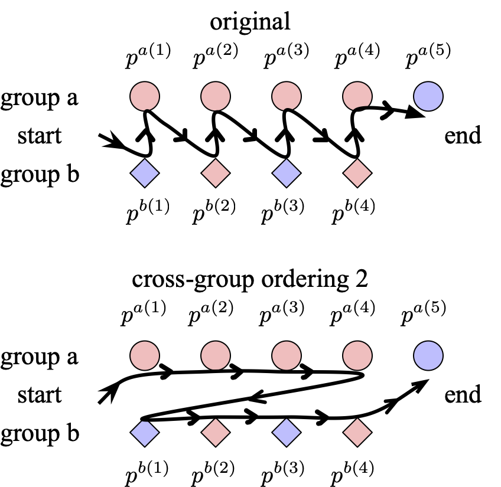
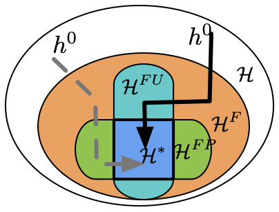
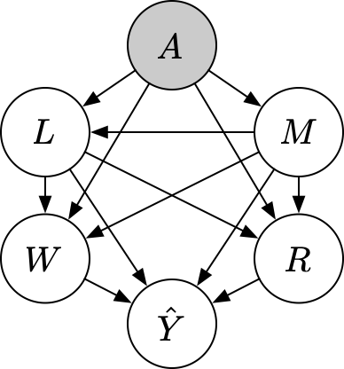

Home
|
I am currently a Ph.D student (2019-present) at Tsinghua University, advised by Prof. Changshui Zhang.
|
Education
 |
Tsinghua UniversityPh.D in Department of Automation, 2019~now, supervised by Prof. Changshui Zhang. |
 |
University of California, BerkeleyVisiting scholar in Department of Mechanics Engineering, 2018.08~2019.02, supervised by Prof. Masayoshi Tomizuka. |
|
Tsinghua UniversityBachelor in Department of Engineering Mechanics (Tsien Excellence in Education Program), 2015~2019 |
Selected Publications
|  |
Towards Model-Agnostic Post-Hoc Adjustment for Balancing Ranking Fairness and Algorithm UtilitySen Cui*, Weishen Pan*, Changshui Zhang, Fei Wang The 27th ACM SIGKDD conference on Knowledge Discovery and Data Mining (SIGKDD), 2022. [Paper] |
|  |
Addressing Algorithmic Disparity and Performance Inconsistency in Federated LearningSen Cui, Weishen Pan, Jian Liang, Changshui Zhang, Fei Wang 35th Conference on Neural Information Processing Systems (NeurIPS2021), 2021. [Paper] |
|  |
Explaining Algorithmic Fairness Through Fairness-Aware Causal Path DecompositionWeishen Pan, Sen Cui, Jiang Bian, Changshui Zhang, Fei Wang The 27th ACM SIGKDD conference on Knowledge Discovery and Data Mining (SIGKDD), 2022. [Paper] |
Activities
-
ICML 2022,